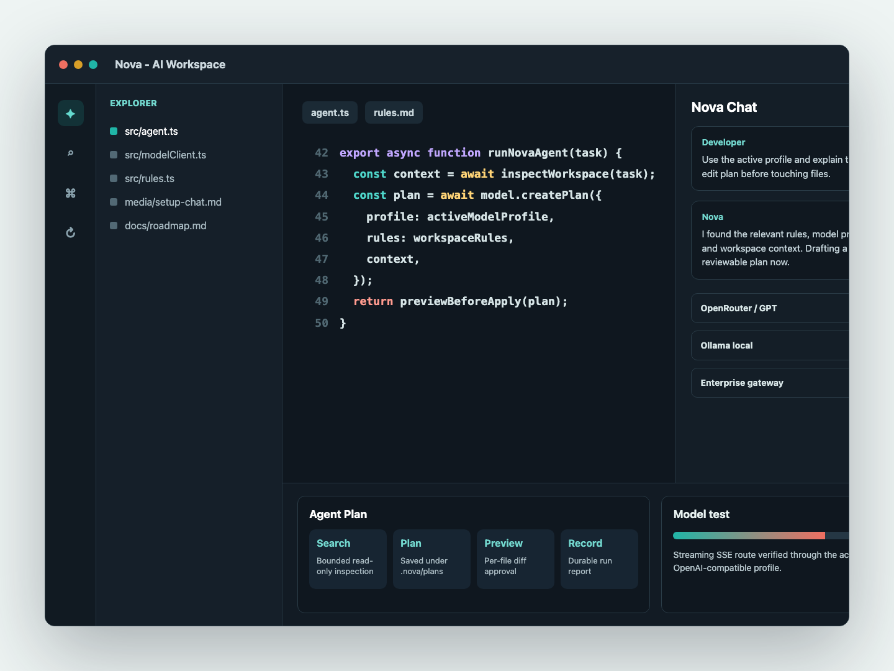

多模型 Profile
为 OpenAI、OpenRouter、DeepSeek、Qwen、Ollama、LM Studio 或自定义网关保存独立配置。
AI-native coding workspace
面向开发者和团队的 AI 原生代码工作台。Nova 保留 VS Code 的编辑器和扩展生态， 再把模型 Profile、仓库上下文、规则系统、Agent 计划和桌面构建流程整合进同一个产品。

Nova 的方向很简单：不要把 AI 编码体验绑定到单一模型、单一云厂商或单一工作流。 它把可控模型路由放在产品核心，同时延续 VS Code 的语言服务、终端、源码管理和扩展生态。
Model routing
每个 Nova AI 功能都走当前激活的模型 Profile。团队可以统一走企业网关，个人可以切到本地服务， 调试时也能快速验证 base URL、模型 ID、密钥和扩展参数。
为 OpenAI、OpenRouter、DeepSeek、Qwen、Ollama、LM Studio 或自定义网关保存独立配置。
自定义非保留请求头和请求体字段，适配租户、项目、路由和生成参数等内部策略。
API key 通过 VS Code SecretStorage 按模型配置保存，本地模型也可以无密钥运行。
Current milestone
当前版本聚焦第一阶段可运行体验：把 Nova AI 作为内置扩展带进 VS Code fork， 并让模型配置、规则、上下文和 Agent 任务在侧边栏内闭环。
支持 OpenAI-compatible SSE 流式响应，并带有非流式兼容回退。
创建、切换、编辑和测试模型 Profile，不需要反复改配置文件。
读取 .nova/rules.md、.cursorrules 和 .cursor/rules/*，让团队约定进入上下文。
根据提示挑选相关源码片段，为聊天、编辑和测试生成补充项目背景。
使用当前激活模型，根据光标附近前后缀生成短代码建议。
重新打开近期计划和运行报告，让 AI 修改过程可追踪、可复盘。
Agent workflows
Nova 的 Agent 先进行受限只读检查，再生成结构化计划。每一步都有计划文件、差异预览和运行记录， 适合小到中等规模的多文件修改。
只允许搜索和读取工作区内的安全路径。
写入 .nova/plans/，先审阅再进入修改。
每个文件都需要确认，降低误写风险。
运行报告保存到 .nova/runs/ 方便追踪。
Coding surface
Nova 不重写开发者已经熟悉的基础设施，而是在编辑器侧边栏里补上 AI 需要的配置、上下文、 命令和审阅面板。
结合当前文件、工作区规则和轻量代码检索，把问题放进真实项目上下文。
使用当前激活模型，根据光标附近的前后缀生成短插入建议。
读取 `.nova/rules.md`、`.cursorrules` 和 Cursor 规则，让团队约定进入模型提示。
从侧边栏直接验证 base URL、模型 ID、密钥和自定义参数是否可用。
Distribution
Nova 的工程流保持改动边界清晰：上游 VS Code checkout 固定到已验证版本，Nova 自有改动作为 overlay 应用，再通过桌面构建脚本产出跨平台归档。
bootstrap:vscode 默认拉取 Nova CI 使用的 known-good VS Code commit，需要升级时再显式传入 VSCODE_REF。
apply:overlay 把内置扩展和产品元数据复制进 checkout，让 fork 差异保持清晰可审。
build:vscode-desktop 和 archive:vscode-desktop 面向 macOS Intel、macOS Apple Silicon、Windows 和 Linux。
Roadmap
完成 overlay 工作流、内置扩展、模型配置、首启引导和验收测试。
升级仓库检索、编辑预览、补全体验、规则系统和更多企业模型接入。
扩展工具执行、终端验证、git 工作流、语义索引和 MCP 配置。
完善品牌、应用 ID、更新通道、安装包和企业策略控制。
Run locally
当前项目以 fork overlay 方式开发。先准备依赖和项目本地 Node，再构建内置扩展、拉取 VS Code checkout、 应用 Nova overlay，最后启动桌面工作台。
pnpm install
pnpm setup:node
export PATH="$PWD/.tooling/node-v24.17.0-darwin-arm64/bin:$PATH"
pnpm typecheck
pnpm build:extension
pnpm bootstrap:vscode
pnpm apply:overlay
pnpm verify:overlay
pnpm start:vscode -- --disable-gpu